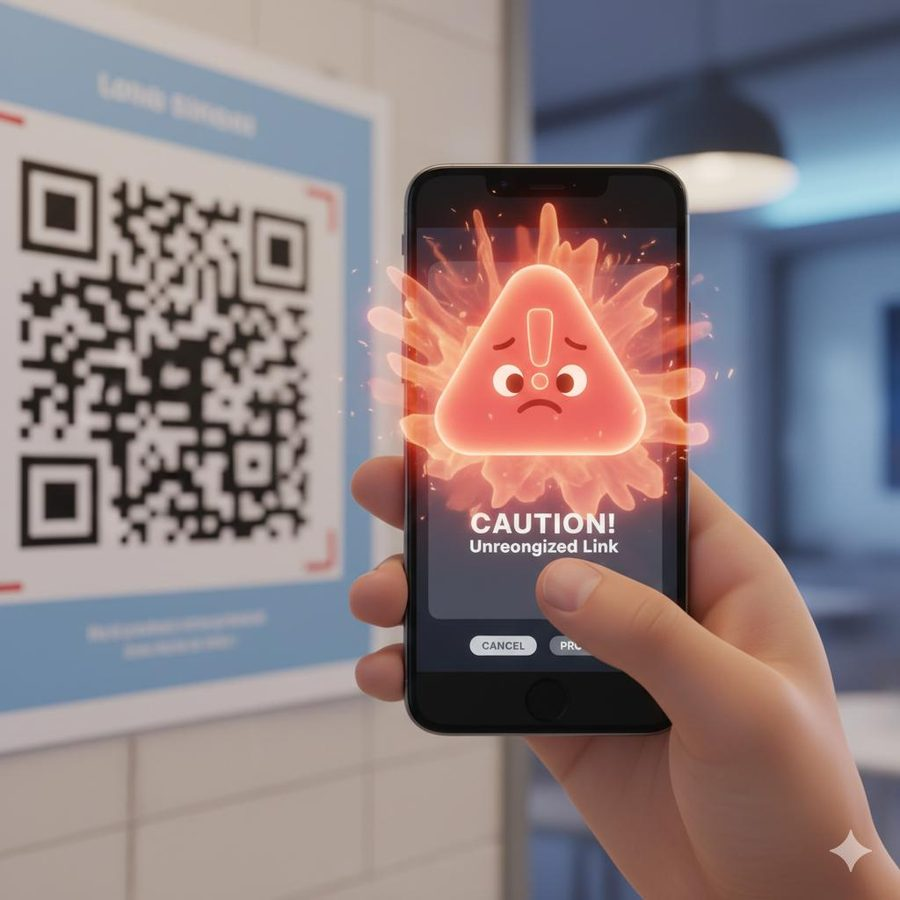

A text says your KYC needs "verification" and shows a QR code. A buyer says to scan a code to get your money. A shop's payment sticker looks a little newer than the rest of the counter. In each case, the QR code is just the delivery method. The scam is the story told around it.
How fake QR code scams work
QR codes look the same whether they are safe or not, and you cannot read the destination with your eyes. Scammers use that blind spot in a few common ways.
| Version | How it reaches you | What the scanner ends up doing |
|---|---|---|
| Sticker swap | A fake QR pasted over a shop, parking, fuel or donation QR | Your payment goes to the scammer's account |
| "Verification" QR | SMS, WhatsApp, email or a poster saying KYC, bill or account needs verifying | Opens a payment screen or a fake login page |
| Scan to "receive" | A "buyer," "refund team," or "prize" sends a QR to claim money | Opens a payment screen that debits you |
| Fake parcel or poster QR | A code on a leaflet, package, or public notice | Takes you to a phishing site or app download |
These frauds are not rare. News coverage of a reply in Parliament, reported by MediaNama, put QR-code-based fraud in India at roughly 18,000 cases in FY 2024-25 and about 39,000 in FY 2023-24. Treat these as approximate figures from that report, and check the original government source if you plan to quote them.
What "verification" really means in this scam
Banks, government departments, and delivery companies do not ask you to scan a random QR code to "verify" yourself. The word is used because it sounds routine and safe. If a message says your KYC, electricity connection, account, or parcel needs verifying by QR code, assume it is fake until you check through the official app or website that you open yourself.
The danger usually appears one step after the scan. The code opens a link or a payment screen, and the loss happens when you enter your PIN, share an OTP, type your details, or install something. That is why the checks below focus on that moment.
How to check payment details before approving a transaction
This is the most useful habit you can build. Do these checks every time, even for a shop you visit daily.
- Stop at the payment screen. Do not enter your PIN yet. The screen after a scan is where you decide.
- Read the payee name. It should match the shop, person, or service you mean to pay. A different name, a personal name at a shop, or a random string is a warning.
- Read the UPI ID. Look at the part before the @ sign. Strange, unrelated, or very generic handles deserve a second look.
- Check the amount. Make sure it is what you meant to pay. For a "receive" or "refund" story, any amount at all is wrong.
- Check the direction. The screen should say you are paying. If you were told you are receiving money, but the screen asks for your PIN, stop.
- Check the physical code. If it is a sticker, look for edges, bubbles, or a pasted-over look. Ask the shopkeeper to confirm the name you should see.
- Pay only when everything matches. If anything differs, cancel and use another way to pay.
Warning signs of a fake QR code scam
- You are told to scan a QR code to receive a refund, prize, or payment.
- A message asks you to "verify" KYC, a bill, or an account by scanning a code.
- The QR code arrives unasked by SMS, WhatsApp, or email.
- A shop's code looks like a sticker placed over another, or is peeling or misaligned.
- The payee name on your screen does not match the place you are paying.
- You are being rushed: "do it in 5 minutes," "offer ends now."
- The code opens a page that asks for your card number, OTP, or net banking login.
- The code asks you to download an app to continue.
Realistic examples
These are composite examples written to show the pattern. They are not reports about real people. News outlets have reported real cases of QR stickers pasted over genuine ones at shops and market stalls, for example in Hyderabad.
Quick pre-payment checklist
Tick what you have checked on your own phone before entering a PIN.
Prevention tips
- Never scan a QR code to receive money. Receiving needs nothing from you.
- Ignore "verification" QR codes sent by message. Open the official app yourself.
- Save regular merchants' details in your UPI app and pay from there when you can.
- In public places, choose a code printed on a board or a payment device, not a loose sticker.
- Do not scan codes from unknown flyers, parcels, or posters, and do not install apps from them.
- Turn on payment alerts, and set a daily UPI limit you are comfortable with.
- Keep your phone's software and your browser up to date, and take notice of warnings about unsafe links.
- Tell parents and elders that one rule: no QR scan to receive money.
If you run a shop or stall
- Look at your QR code every day for stickers, scratches, or changes, and keep it behind a clear cover.
- Turn on payment notifications or use a sound-box that announces payments, so a missing payment shows up quickly.
- Tell customers to check that the name on their screen matches your shop name.
What to do if you have been scammed (India)
Speed matters. Work through these in order and keep notes as you go.
- Call the National Cyber Crime Helpline 1930 immediately. It is the quickest route for reporting online financial fraud in India.
- File a complaint at cybercrime.gov.in, the National Cyber Crime Reporting Portal. Choose the financial fraud category and keep your acknowledgement number.
- Call your bank using the number on your card or the bank's official site. Ask them to block the UPI ID, card, or account, and to flag the transaction.
- Raise a dispute in your UPI app on the specific transaction. NPCI's process starts with the UPI app, then escalates to the bank and NPCI. See the NPCI UPI dispute redressal page.
- If you typed details on a fake page, change your passwords and PIN from a safe device, and tell your bank which details you entered.
- If you installed an app, uninstall it, turn off mobile data and Wi-Fi, and have your phone checked.
- If it was a sticker at a shop, tell the shop owner right away and inform the local police. Take a photo of the code if you can.
- Save evidence: the transaction ID, UPI ID, payee name, screenshots, messages, and links.
- If the bank or app does not resolve it, write to the bank's grievance officer and escalate to the RBI Ombudsman through the RBI complaint portal.
Nobody can promise that the money will come back. Quick reporting gives the best chance that a transfer can be stopped or traced. Check the official sites above for current procedures, because they can change.
Conclusion
A QR code is just a shortcut to a link or a payment screen. The scam is in the story: "verify," "refund," "scan to receive." Keep to two habits and you avoid most of these tricks. Never scan to receive money, and always read the payee name, the amount, and the direction before entering your PIN.
Related scams use the same pressure. Read our guides on the fake UPI refund confirmation scam, the fake AI customer support chat scam, and the WhatsApp voice note verification scam.
Got a QR code or message you are unsure about? Paste the message into our free checker for a quick first read.
Frequently asked questions
What is a fake QR code verification scam?
It is a scam where you are told to scan a QR code to verify your KYC, bill, account, or identity, or to receive a refund or payment. The code either opens a payment screen, sends you to a fake login page, or installs something harmful.
Do I need to scan a QR code to receive money on UPI?
No. Money sent to you arrives without a scan, a PIN, or any approval. If anyone asks you to scan a QR code or enter your PIN to receive money, treat it as a scam.
Can money be stolen just by scanning a QR code?
Scanning alone usually only opens a link or a payment screen. The loss normally happens when you enter your PIN, share an OTP, type your details on a fake page, or install an app. Do not proceed past the scan if anything looks wrong.
How do I check a QR code payment before approving it?
Before entering your PIN, read the payee name and UPI ID, check the amount, and confirm the screen says you are paying, not receiving. Match the name with the shop or person you intend to pay, and stop if anything is different.
How do I report a fake QR code scam in India?
Call the National Cyber Crime Helpline 1930 immediately and file a complaint at cybercrime.gov.in. Also inform your bank and raise a dispute on the transaction in your UPI app.
Got a QR code message you want checked?
Run it through the checker